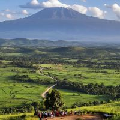

About me
Ugochi Goodness Ugorji
My name is Ugochi Goodness Ugorji from Nigeria, a passionate individual with high regard for hardwork. I am studying web and software development at BYU-Pathway Worldwide.The course has given me the opportunity to brainstorm. and do hard things. I have no prior knowledge about this course but as i study my mind was open to learning.I am grateful for opportunity to learn and explore.
Nigeria
Nigeria the giant of Africa as it is fondly called, is country where you meet talents and stars. Nigeria is well known for its cultural ethics and development. There beautiful places and recreational centers you can find in the country and there are fun activities that are hosted.